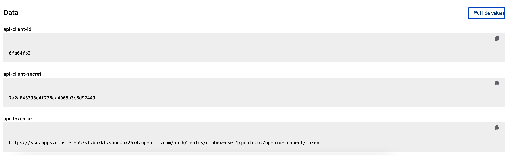

What are Backend, Product, ActiveDocs and CRDs? Backends are Internal APIs which are then bundled into a 3scale Product. it contains at least the URL of the API It can optionally be configured with mapping rules, methods and metrics to facilitate reusability. Products are the Customer-facing APIs. It defines the application plans, and configure APIcast You can create API documentation by attaching the Mobile OpenAPI schema as a 3scale ActiveDoc ActiveDocs are interactive documentation for your API offered as a framework by 3scale. With Swagger 2.0 (based on the Swagger Spec) this provides a functional, attractive documentation for the API, which will help developers to explore, to test and integrate with the APIs. A CRD file allows you to define your own object kinds (Backend, API, ActiveDoc etc) and lets the API Server handle the entire lifecycle of the objects. What is a Service In OpenShift, a Kubernetes Service serves as an internal load balancer and identifies pods which in turn have the applications. If the application needs to be accessed from outside of OpenShift, you will need OpenShift routes. In this workshop, since both 3scale and the Mobile Gateway run on OpenShift, 3scale will proxy requests to the backend using Services. This also means the backend cannot be accessed directly from outside OpenShift. Where do I find this Client ID? Navigate to the {globex_developer_portal}/admin/applications[Globex Developer Portal Applications^, window="devportal"] The client ID is displayed against the globex-mobile-gateway-product product. Figure 1. globex-mobile deployment on OpenShift How do I verify what I just did? Ensure the {openshift_cluster_console}/k8s/ns/globex-apim-{user_name}/deployments/globex-partner-web/environment[globex-partner-web deployment, window="console"] looks like this now Figure 2. Partner Web Portal Deployment Values To check the Secret that you updated, you can navigate to {openshift_cluster_console}/k8s/ns/globex-apim-{user_name}/secrets/globex-partner-web[globex-partner-web secret^, window="console"]. Scroll down to the Data section, and click on Reveal values  Figure 3. Partner Web Portal Secret with SSO details How to fetch Service URL from OpenShift console? Navigate to the globex-apim-{user_name} namespace on the OpenShift console by clicking here {openshift_cluster_console}/topology/ns/globex-apim-{user_name}[APIM module on OpenShift^] and login with ({user_name}/{user_password}). In the Find by name filter enter the value mobile-gateway. The globex-mobile-gateway deployment is highlighted. Clicking on this deployment opens the context menu for this deployment Figure 4. Locate globex-mobile-gateway deployment Under Services section you can see the name of the services assocated with this deployment. Click on the globex-mobile-gateway link and you will be taken to the Services page. Under Service routing → Hostname, you can find the service’s hostname. Make a note of this URL and you will need this to create the Backend on 3scale. Figure 5. Mobile Gateway Service in OpenShift